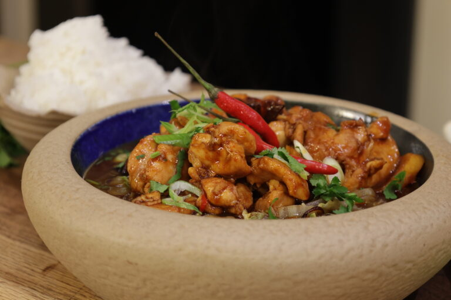

Chinese Braised Chicken

Description
This family recipe from Jonathan Phang is one he was brought up on. Simply named Chinese Braised Chicken it is packed with
flavoursome ingredients including ginger, garlic, Shaoxing wine, soy sauce, hot sweet chilli sauce, red chilli, star-anise
and spring onions. It is simple, tasty, very easy, very quick! All the boxes ticked!
Ingredients
- 500g chicken thighs - skinless and boneless and cut into large, bitesize chunks
- 1 tbsp cornflour
- 2 tbsp water
- 2 tsp sesame oil
- 2 tbsp groundnut oil
- 3 tbsp brown sugar
- 4 slices ginge
- 2 large cloves garlic minced
- 4 tbsp Shaoxing wine or dry sherry
- 2 tbsp dark soy sauce
- 1 tbsp light soy
- 2 tbsp hot sweet chilli sauce
- 1 red chilli seeded and finely sliced
- 2 star-anise
- 3 spring onions cut into 2 inch slices
- Salt and pepper
Method
- Cut the chicken into large chunks and season with salt and pepper.
- Mix the cornflour with cold water and coat the chicken with the mixture. Add two teaspoons of sesame oil and combine well.
- Heat the groundnut oil in a wok, large frying pan or a saucepan over a medium heat.
- Sprinkle the sugar over the oil and heat until it melts and starts to bubble, taking care not to let it burn.
- Add the chicken and stir until coated in sugar, browned on each side and caramelised.
- Add the garlic, ginger, Shaoxing wine, dark soy sauce, light sauce, hot sweet chilli sauce, star-anise, then stir and cover
with half a pint of water.
- Place a lid over the pan and simmer for ten minutes.
- Remove the lid and continue to cook until the sauce thickens and reduces by half.
- Remove the ginger slices, stir in the spring onions and serve over a bed of stir fried green vegetables with steamed Jasmine rice.